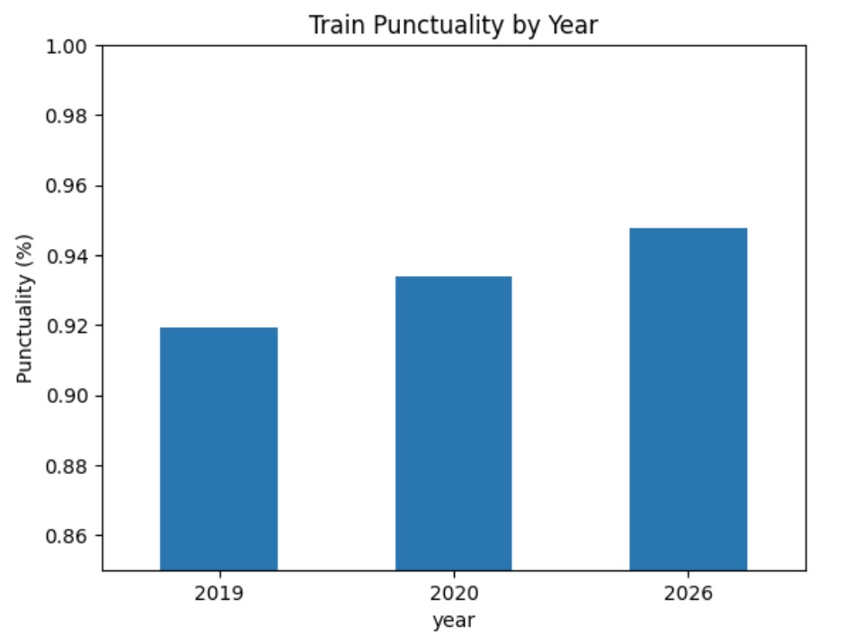
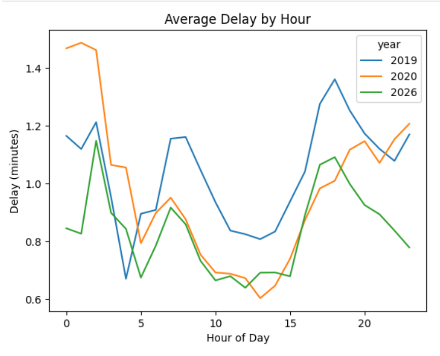
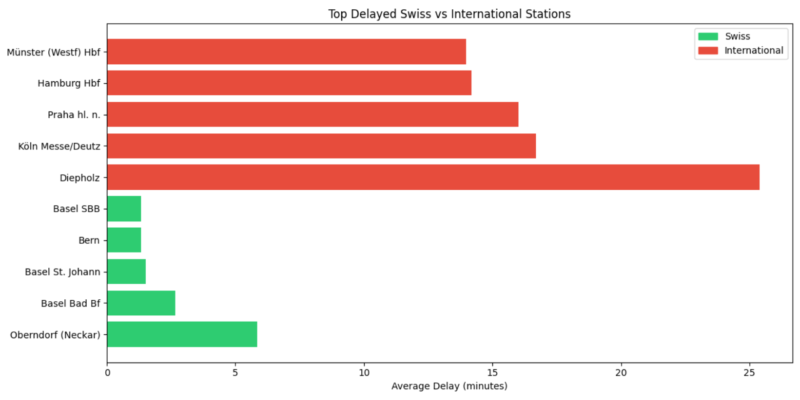
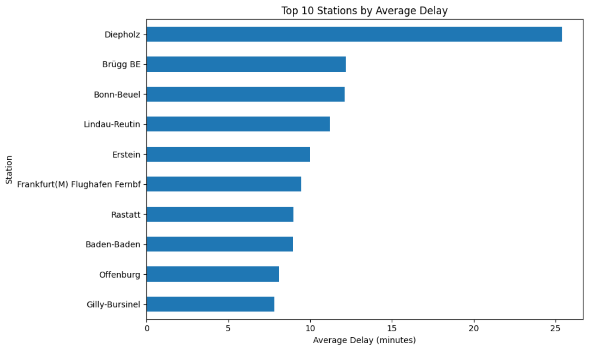

Reliability, Resiliance, and Punctuality/Delay Patterns (2019, 2020, 2026)
The train punctuality by year chart highlights a clear upward trend in punctuality over time. In 2019, punctuality was around 91.93%, which increased to approximately 93.37% in 2020 and further improved to about 94.78% in 2026. This trend suggests that SBB’s system became more efficient over time. However, the improvement in 2020 is likely influenced by reduced passenger demand during COVID-19, while the continued improvement by 2026 indicates that SBB may have implemented operational improvements or benefited from long-term system optimization. This demonstrates both short-term and long-term changes in performance.

Overlaying the three years reveals the daily worker commutes in the network. Delays are not random, they consistently peak during the evening rush hour (17:00 - 19:00). This demonstrates how minor morning delays cascade and compound throughout the day. Notably, the 2026 line (green) remains significantly lower than the 2019 baseline (blue) during these peak hours, indicating much better rush-hour traffic management.

Use the buttons below to explore the data dynamically. By toggling the years, you can isolate the impact of passenger volume. In 2019 and 2026, the evening rush hour peak is distinct. However, switching to 2020 causes that peak to almost entirely vanish. This interactivity proves that the primary driver of compounding daytime delays is the human element of extended boarding times and crowded platforms, rather than mechanical rail failures.
This bar chart shows that international stations consistently have higher average delays than Swiss stations. Noticeably, most of the international stations with the most delays are German. This suggests that the primary sources of delay are not within Switzerland itself but occur at or beyond national borders. Cross-border travel introduces additional complexity, such as coordination between different railway systems, varying infrastructure quality, and scheduling mismatches. As a result, delays are more likely to occur or accumulate at these international points, which then impact the overall performance of SBB trains.

The top 10 stations by average delay chart reinforces this conclusion by showing that many of the most delayed stations are located outside Switzerland. These stations likely act as bottlenecks within the broader rail network, where delays accumulate due to operational inefficiencies or external constraints. Rather than delays being evenly distributed across all stations, they are concentrated in a small number of high-impact locations. This indicates that improving performance at these key stations could significantly reduce overall delays.
